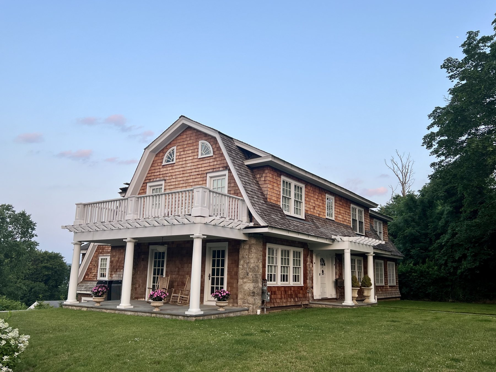

Aging in place in Connecticut
Staying in the home you have can be the right call. I will help you look at it honestly.
Before anyone talks about selling, we should ask whether staying, with the right help, is the better path. I am a real estate agent, not a caregiver or a lender. My job is to set the options beside each other and tell you the truth about each one.
5.0 from 101 Google reviewsStart with staying
Four ways to think about remaining at home
Aging in place simply means continuing to live in the home you already have, with whatever support makes that comfortable. These are the paths I most often talk through with families.
In-home caregivers
Help with daily routines, meals or rides can make a familiar house work for longer. I am not a care provider, but I can introduce you to people I trust, and you decide whether that help is enough.
The house itself
Sometimes a few practical changes, or simply using the rooms differently, is all that is needed. We can walk through and talk about what is getting in the way, before anyone assumes a move is required.
A reverse mortgage, if it is a fit
For some homeowners, a reverse mortgage through Reverse Lending Partners can unlock equity without selling. I do not originate loans, quote rates or decide eligibility. I will make the introduction, and they can explain the details.
Senior placement, when a community is better
If the home is no longer the right setting, a placement advisor can help compare communities and levels of care. Staying is not always possible, and that is a fair thing to name out loud.
I will tell you if I think a sale is not the best financial decision. That conversation is the point of this page.
Why people choose to stay
The home they worked for is often worth keeping
Families usually arrive at this question for a handful of very human reasons. None of them automatically means it is time to sell.
The weather
Connecticut winters are real, but with help for the driveway, the walks and the heating, many people would rather stay put than start over.
Family nearby
If the kids and grandkids are already close, leaving town can cost more than it saves. Staying can be the way to keep those ordinary visits.
The retirement they built
This may be the home they worked toward for years. Giving it up should be a choice, not a default.
The rooms they know
Neighbors, the garden, the kitchen window. Familiar places have a value that does not show up on a closing statement.


If the porch, the neighbors and the rooms still feel like home, we start by asking how to keep them.
If a move does become the right path
Then we take it slowly, usually over 6 to 12 months
Selling is one option, not the opening offer. When it is the better path, I personally coordinate the work so the household is not left to invent a plan. This is the shape of that year.
- 1Month 1
A conversation
Reasons, timing and whether staying is still on the table. No pressure to list.
- 2Month 1–2
A home assessment
A room-by-room walk-through, and an honest look at what the house could sell for.
- 3Months 2–5
Sorting
Keep, give to family, sell, donate. One room at a time, never the whole house at once.
- 4Months 3–6
Auction
I coordinate an auction or estate sale, often with Golden Gavel, for what should not simply be boxed up.
- 5Months 4–7
Cleanout
Junk removal and a thorough clear-out, so the house is empty and ready. I line up the crew.
- 6Months 5–8
Prep and photos
Small repairs, a fresh clean and staging where it actually helps the sale.
- 7Months 6–11
The sale
Pricing, showings and a closing date that follows the move, not the other way around.
- 8Moving week
Unpacking
I help unpack and set up the new place, so it feels like home on the first night.
When time is short. A health change does not always leave a year. We can compress these steps, and I will be plain about the trade-offs so you can choose with your eyes open.
In their words
People I have stood beside
Melissa is amazing! I couldn't have asked for a better experience selling my home. Melissa was incredibly educated, navigating the market perfectly. She was also a source of great comfort and support during a deeply difficult time. I highly recommend her to anyone looking to buy or sell.
I contacted Melissa based on a recommendation from a friend. She was an absolute treat to work with, pointing out things I never would have noticed and making sure I understood the potential expenses involved to repair them. This girl knows EVERYTHING. Tile, electrical, furnaces, construction and a whole lot more. Such an amazing and knowledgeable agent! I also asked her to sell my condo, and she handled both ends like a pro, perfectly coordinating the closing dates so my move was painless. I completely understand why my friend recommended Melissa. Thank you for everything!
Melissa was amazing to work with! She made the process so smooth and seamless. She knows someone for everything you can think of for any need you may have while moving. I am moving out of state and she connected me with another amazing realtor and just made the experience so less stressful. She also works super quickly and was just so amazing, can’t say enough good things about my experience.
We were fortunate to have Melissa Kiehl as our realtor . She guided us through the entire process of selling our home . She is a problem solver and has great team of individuals that assist her . I will refer her to friends and family . My wife and I will utilize her services in the future . Again Melissa , Thank you so much . Jon and Jeanine
Who you will be working with
Hi, I am Melissa
I am a REALTOR® with KW Legacy Partners. I help Connecticut families think clearly about staying, moving and the work in between. Much of my work comes through referrals, and I would like to keep it that way: you will always work with me directly.
I hold the Seniors Real Estate Specialist® (SRES®) designation. The most useful thing I can offer on a question like aging in place is an honest comparison, including when a sale would be a mistake.
- REALTOR®
- SRES®
- PSA
- KW Legacy Partners
When you are ready
Let's talk about staying, or about a move, with no rush
Tell me a little about how the house is working right now. I will follow up personally. I ask for a mailing address rather than an email, because I would rather send you something thoughtful than add you to a list.
Prefer to talk now? Call 860.480.4169.
Common questions
Questions people bring to this
What does aging in place mean on this page?
It means staying in the home you already have, with whatever help makes that comfortable and safe, rather than treating a move as the first step. It is a housing decision. It is not a medical plan, and I am not a care provider.
Do you provide in-home care or lending?
No. I am a real estate agent. If staying looks like the better path, I can introduce you to in-home caregivers, a senior placement advisor, or Reverse Lending Partners. Those partners work independently, and you decide what fits.
Can someone stay in the home and still use the equity?
Sometimes. A reverse mortgage is one option some homeowners explore. I do not originate loans or quote terms. Reverse Lending Partners can explain whether it is a fit for a particular household.
When is moving the better choice?
When the house, the upkeep or the location no longer supports daily life, even with help. If a move is the better path, I personally coordinate a 6 to 12 month plan that includes sorting, cleanout, auction and unpacking at the new place.
Is there a cost to have this conversation?
No. The first conversation is simply a conversation. If staying home is the better outcome, that is a success.